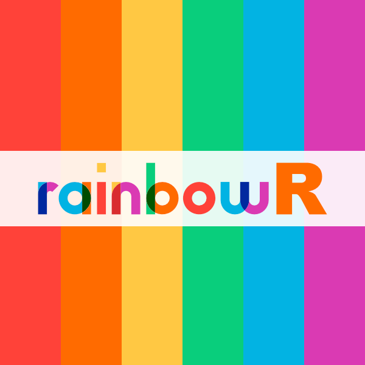

Speakers
Arranged alphabetically by first name, within each section
Speaker details will appear here once the programme is confirmed.
Note
The examples below are deliberately visible so that this page remains a useful copy-and-edit template.
Keynote speakers
Speaker name

Speaker Name (pronouns) is a role at Organisation. Add a short biography that explains their work, interests, and connection to the conference.
Talk speakers
Speaker name
Add a short biography here. Copy this entire section for each new speaker, then update the heading, anchor, talk link, image, biography, and any relevant social links.